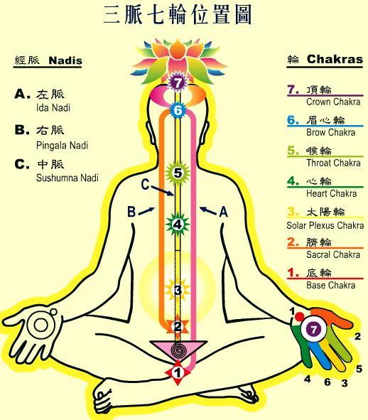

脉轮学说
脉轮学说，是藏传佛教－－密宗的独有学说之一。
佛教传到西藏以后，受中原穴脉学说的影响，藏传佛教的喇嘛提出一种脉轮学说。他们根据瑜伽的学理，认为人体是由五大元素所组合成的，即以太、气、火、水和土；并且由身体中不同的脉轮(cakras
)所支配。人体身体内的七个脉轮，分别控制着身体的某个特殊部位和某些内分泌腺体。通过修炼，可以使身体充满能量。

密宗修炼法门中，最重要的是对查克瑞（有些典籍也叫做查克拉）的修炼。他们认为，人体有七大查克瑞穴位，同时，也存在三大经脉。密宗对查克瑞的修炼，类似于道教的气功修炼；七大查克瑞穴相当于中原武术医学中的７０２个穴位，而三大经脉又相当于中原武术医学中的奇经八脉与十二正经。藏传佛教的脉轮学说建立在印度瑜珈学说、中国五行学说、中国阴阳学说、中国医学和西藏文化之上，藏传佛教的脉轮学说不同于中原武术医学的穴脉学说，它有自己的独有文化。
查卡瑞(拉)梵文意思是轮；在身体拥有旋转的能量中心，看起来就像转动的纺车，这个中心被称做脉轮；意指能量在此积聚集中，循环转动，贯穿身体的前后部份，成为一个体内能量进出的管道。
在印度和它的瑜珈灵性系统中，一个脉轮就被认为是在人身体的一个结点，人体分为七个能源中心,这七个能源中心因为是以盘旋的轮状出现,所以名为七重轮。将七个主要脉轮从脊骨底到头顶排列一行的提升圆形物。每个脉轮与某种颜色、多重特定功能、意识形象、古典元素和其它有区别的特征联系在一起。脉轮被认为激发了肉体和同肉体与精神两种本性的交互作用联系起来。经由气轮接收和传达精神上的、社交上的以及性能量上的能量。
但若把所有疾病与情绪全部根据气轮来归纳又太没有弹性了,事实上气轮与气轮之间的能量是互通的,越是真正有智慧、身心灵平衡健康的人,越能打开全部气轮。
气轮的能量可以运用不同的色光来做补足与排解,如红色解蓝色,橘色解紫蓝色,紫色解黄色等,气轮甚至有不同的专属频率或音符,这些音符会震动对应的气卖,进而唤醒或开启它们。
人体七轮
1. 第一个脉轮是海底轮( Muladhara Cakra )：
位于肛门附近的腺体中心，是各种身体、心智、和灵性渴望的贮藏所，控制着人体中固体的成分，和身体健康、排泄功能有关。
2. 第二个脉轮是是生殖轮(Svadhisthana Cakra )：
它位于生殖器官部位附近的腺体中心，它控制了性线及身体中的液体成分，主宰人的性功能。
3. 第三个脉轮是脐轮(Manipura Cakra) ：
位于肚脐附近的腺体中心，控制了身体中火的成分及胰脏和肾上腺的分泌，主导我们的活力和世俗的活动，支配人的精力和消化功能。
4. 第四个脉轮是心轮(Anahat Cakra) ：
它位于靠近心脏附近的腺体中心，控制着气体的成分，也控制了胸部的胸线和淋巴腺，和人体的呼吸、循环功能有关。
5. 第五个脉轮是喉轮(vishuddha Cakra) ：
它位于喉头附近的腺体中心，控制着以太成分及甲状腺及副甲状腺，与说话功能有关。同时也调整了人体的精力，并控制着人体的活动。
6. 第六个脉轮是眉心轮 (Ajina Cakra) ：
它位于脑的正中，它控制着脑下垂体并使用松果体和下视丘的荷尔蒙，主宰世俗和灵性的知识，支配着心神方面的功能。
7. 第七个脉轮是顶轮 (Sahasrara Cakra) ：
它位于脑顶，他超越了生物学及心理学的范畴，他的功能只能用哲学和灵性的语言来描述。
这七个脉轮和内分泌腺的平衡与否，直接影响人的身心健康。而内分泌亦由这七个脉轮所支配。人的疾病也是由于这些脉轮其中之一的衰退，或是一个以上的脉轮的功能失去平衡所致。瑜伽体位法的目的，即是透过伸缩及伸展，强化各个脉轮，使各种不同的内分泌腺的分泌功能处于均衡状态，以维持身体的健康。
人体三脉
藏传佛教密宗认为，人体有三大经脉。人体的中轴是修炼的核心，三脉分别位于人体中轴线附近。中脉靠近脊椎，左脉位于身体之左，右脉位于身体之又。
中脉，从海底轮开始，顺人体的脊椎前向上直通入脑，到顶轮后，向前弯曲，直通两眉之间眉心位置，所以眉心又是各种宇宙能量进入人体的通道。通过修持，将中脉位于顶门处的通口打开，成为宇宙能量进入体体内和人体冲神识出人体的最佳通道。
左右二脉通于人体的左右两个鼻孔，上行入脑，夹中脉下行，至平等于脐下四指处的生法宫位置，与中脉会合，其中左脉为水脉，属阴，所以以称太阴脉，右脉为火脉，属阳，所以称太阳脉。
补充：
1.启动“七脉轮”的数字是“3396815”，使其更加活跃而旺盛！
2.人体的“灵气，灵性”的外来语是：Reiki.
3.人体最主要的是“整体观”！
4.本人还发现了人体内部整体及细胞运动之方向。
5.调解人体，不应该是“治疗”：人体“疾病”之产生，实质乃是发生问题之信号；我们进行调理 调解就可以了，一切都需要在“和谐提高，向正常的方向过度”的方法上入手！
http://baike.baidu.com/view/75087.htm